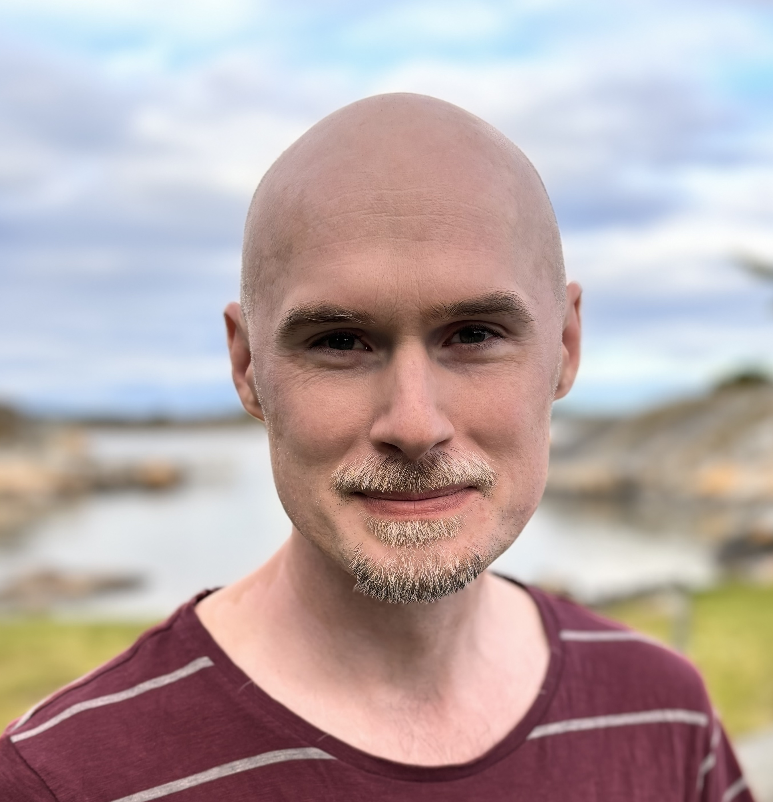

Johan Falk · Falk AI
Sedan 2024 driver jag Falk AI, där jag arbetar med analys och policyfrågor inom AI. Hösten 2026 gick jag en utbildning inom AI-policy för den europeiska organisationen Talos Network. Oktober 2026 till maj 2027 arbetar jag som stipendiat hos AI Safety Connect, som organiserar öppna träffar och slutna samtal i samband med globala möten om AI.
Mina styrkor ligger i en mångsidig förståelse för AI-frågor, aktuella kunskaper i ett område som rör sig snabbt, och en förmåga att hitta kärnfrågor och kommunicera dem på ett begripligt sätt. Jag arbetar också särskilt med att utforska öppna scenarier och genomföra scenarioövningar.
Jag har följt AI-fältet intensivt sedan 2018 – med ett särskilt fokus på samhällspåverkan, risker och vad det kräver av oss som individer och institutioner.

Jag har en bred bakgrund. Min licentiatexamen är inom fysikdidaktik, specifikt kvantmekanik. Som vetenskapsjournalist arbetade jag ett kort tag på Dagens Nyheters vetenskapsredaktion, sedan drygt tre år som teknikredaktör på Forskning & Framsteg. Efter det följde några år som webbutvecklare i ett globalt open source-community, där jag arbetade särskilt med utbildningar och att bygga det svenska communityt. När jag till slut tog klivet att bli lärare var det med den långsiktiga målsättningen att förbättra svenska skolan.
2015 började jag arbeta på Skolverket, och hade bland annat ansvar för kursplanerna i matematik. 2023–2024 startade jag och ledde Skolverkets arbete med AI och utbildning – ett arbete som innebar att träffa tusentals lärare, samordna myndigheter, träffa beslutsfattare, och representera myndigheten i TV, radio och tidningar. Vi arbetade också med att utforska hur AI påverkar utbildning på sikt.
Mitt engagemang i AI-frågor drivs till stor del av att minska globala katastrofala risker. Jag valde därför att sluta på Skolverket, och har sedan dess drivit eget företag medan jag letat efter sätt att påverka globala AI-frågor. Hösten 2026 och våren 2027 gör jag just detta, genom AI Safety Connect.
Innan stipendieplaceringen hos AI Safety Connect arbetade jag mycket med AI-frågor för utbildningsväsendet. Jag har hållit hundratals föreläsningar och workshops för lärare, skolledare och utbildningsförvaltningar, och skrivit flera böcker om AI och utbildning. Skolan och utbildning är oerhört viktigt för att samhället ska klara AI-omvandlingen bra, men hur tekniken utvecklas och hur de globala riskerna hanteras avgörs inte av skolan.
Det mesta av min arbetstid går till att bidra till att AI Safety Connect kan få beslutsfattare, tekniska experter och samhällsrepresentanter att träffas, och att de då har goda förutsättningar att fatta beslut som minskar AI-risker. Utöver det lägger jag mycket tid på att följa AI-utvecklingen, och att förstå vad den innebär.
Parallellt med AI Safety Connect tar jag mig an ett fåtal uppdrag genom mitt bolag Falk AI. Om du har en förfrågan som rör strategiskt arbete eller AI-säkerhet är du välkommen att kontakta mig på johan@falkai.org eller 070-424 90 58.
Jag är inte kopplad till något AI-bolag och har ingen kommersiell agenda. Mina intäkter kommer från ett stipendium och från uppdrag genom mitt eget bolag, vilket ger mig frihet att säga vad jag faktiskt tror. Läs gärna mer om varför jag tycker AI är så viktigt.
Johan Falk arbetar med analys och policyfrågor inom AI, med särskilt fokus på globala katastrofala risker. Han är forskarutbildad vetenskapsjournalist, fysiker, lärare, författare av åtta böcker om AI, och ledde 2023–2024 Skolverkets AI-arbete inom utbildning. Han arbetar nu som stipendiat hos AI Safety Connect (oktober 2026 till maj 2027), som driver AI-säkerhetsfrågor vid FN, OECD och andra mellanstatliga arenor.
Ladda hem profilbilder →Text mer anpassad för skolsammanhang:
Johan Falk arbetar med analys och policyfrågor inom AI, med särskilt fokus på globala katastrofala risker. Han är forskarutbildad vetenskapsjournalist, fysiker, lärare och författare av åtta böcker om AI. Han ledde Skolverkets AI-arbete inom utbildning 2023–2024 och fick Guldäpplejuryns särskilda pris 2024 för sina insatser. Hösten 2026 gick han en utbildning i AI-policy hos Talos Network, och från oktober 2026 till maj 2027 arbetar han som stipendiat hos AI Safety Connect – en organisation som driver AI-säkerhetsfrågor vid FN, OECD och andra mellanstatliga arenor. Johan har föreläst och hållit workshops för skolor, myndigheter, företag och organisationer i hela Sverige.
Ladda hem profilbilder →Stipendiat hos AI Safety Connect oktober 2026 till maj 2027, som del av Talos Networks fellowship-program. AI Safety Connect arbetar med mellanstatliga AI-policyfrågor vid globala toppmöten (FN, ITU, OECD, G7/G20).
Analys och policyfrågor inom AI, med fokus på globala risker. Föreläsningar, workshops och rådgivning för myndigheter och organisationer, och tidigare mycket arbete för skola och utbildning.
Initierade och ledde myndighetens AI-team. Föreläste och representerade Skolverket i media och för regeringen.
Ledde utveckling av nationella matematikkursplaner och ansvarade för nationella prov i matematik.
Teknisk webbutveckling och hundratals utbildningsvideor för en global community kring open source.
Sveriges ledande populärvetenskapliga tidskrift. Initierade tidskriftens podcast.